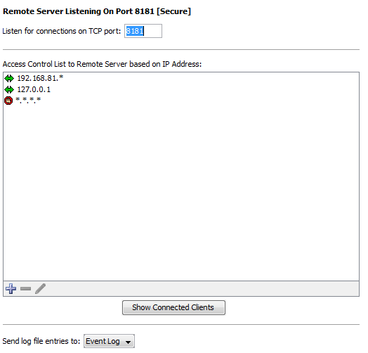

The Remote Server
InterMapper's Remote Server allows a user to configure and edit maps on an
InterMapper installation from a remote computer. To allow these changes, the
Remote Server accepts connections from the InterMapper or InterMapper RemoteAccess
application, running on a different computer. For more information about InterMapper
RemoteAccess, see the InterMapper
Remote web site.
InterMapper always listens for remote connections on its localhost interface,
127.0.0.1. This allows a user to run a copy of the InterMapper RemoteAccess
application on the machine that is running InterMapper. For security,
InterMapper refuses all Remote Server connections from non-localhost addresses
by default to prevent unauthorized configuration.
You can configure InterMapper to accept connections from remote computers,
giving varying degrees of access by IP address or by username and password.
Unlike the Telnet and Web servers, you cannot start or stop the Remote
Server. You configure the Remote Server using the Remote Server settings panel
of the Server Configuration section, found in the Server Settings window.

To configure the Remote Server:
-
From the Edit menu, choose Server Settings...
The Server Settings window appears.
- In the Server Configuration section, click Remote
Server. The Remote Server panel appears.
-
Enter a TCP port number, or use the default value.
- To configure access to the Remote Server, click the Plus icon
to add addresses to the Remote Server firewall.
- To remove an entry, click the entry, then click the Minus icon.
- To edit an entry, click then entry, then click the Pencil tool.
- To see a list of clients connected to the server, click Show Connected Clients. (See below)
- If you want entries from this server to be sent to
a different log file, choose a log file from the Send log file entries
to dropdown menu. For more information on log files, see Log Files.
Note: The Server Settings window is
available only to users who have administrator privileges.
Showing Connected Clients
Click Show Connected Clients to view a list of InterMapper clients connected to the server. The Remote Clients window appears, showing the connected user's name, IP address, time of login and type of license.

Additional Information
For more information on configuring your Remote Server, see Server
Access Control. It describes how to set your Remote Server's port,
discusses encryption and when to use it, and describes how to configure
the built-in firewall's list of IP addresses.
For more information on configuring your built-in servers' firewalls,
see Configuring a Firewall.
For more information on users and groups, see Users
and Groups. It describes how to set up users and groups, and how you
specify who may use the Remote Server. It also discusses administrator
access to the Remote Server.
For more information on setting permissions for a particular map, see
Controlling Access to a Map. It describes
how to set up unique access controls (by username) for an individual map.